Hercules,
the boy who
never gave up.
A little boy, big adventures,
and a very big heart.
THE JOURNEY / 이야기 목차
A boy unlike any other
Long, long ago, there was a boy named Hercules.
He was not like other boys.
He was very, very strong.
His dad was Zeus, the king of the gods. Zeus lived high up on Mount Olympus. He could make thunder go BOOM! His mom was a woman named Alcmene.
Even as a baby, Hercules was strong.
One night, two big snakes came into his room.
HISS! HISS!
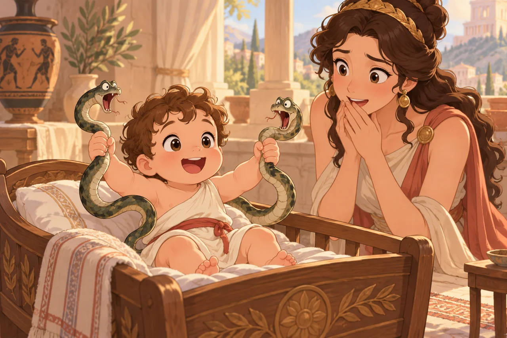
The snakes came close to his bed.
But baby Hercules was not scared.
He put out his little hands.
GRAB! GRAB!
He held both snakes!
"Wow!" cried his mom. "What a strong baby!"
Hercules grew up to be a big, strong man. He could lift rocks and push trees. But being strong did not mean life was easy.
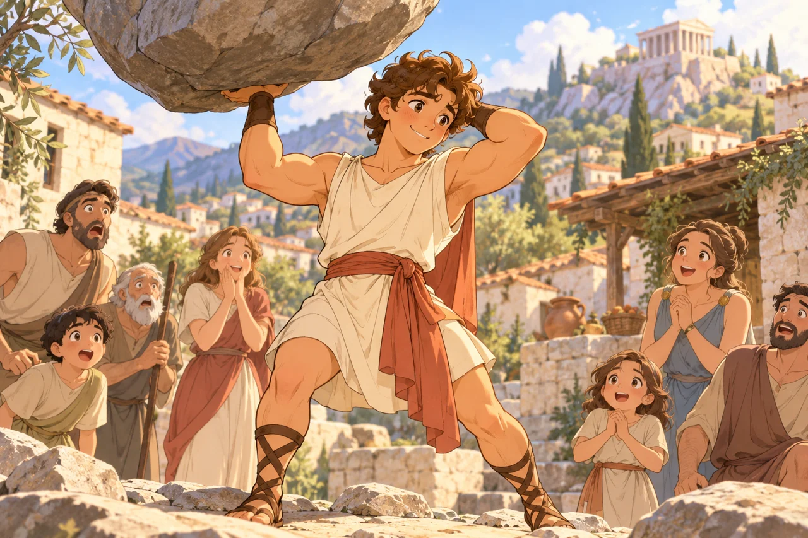
Hercules made mistakes, too. Some were very bad. He had to learn to do better.
One day, a king gave him a big job.
"You must do twelve hard tasks," said the king.
"Twelve?" asked Hercules. "That is a lot!"
"Yes," said the king. "And they will not be easy."
Hercules took a deep breath.
"I will try," he said.
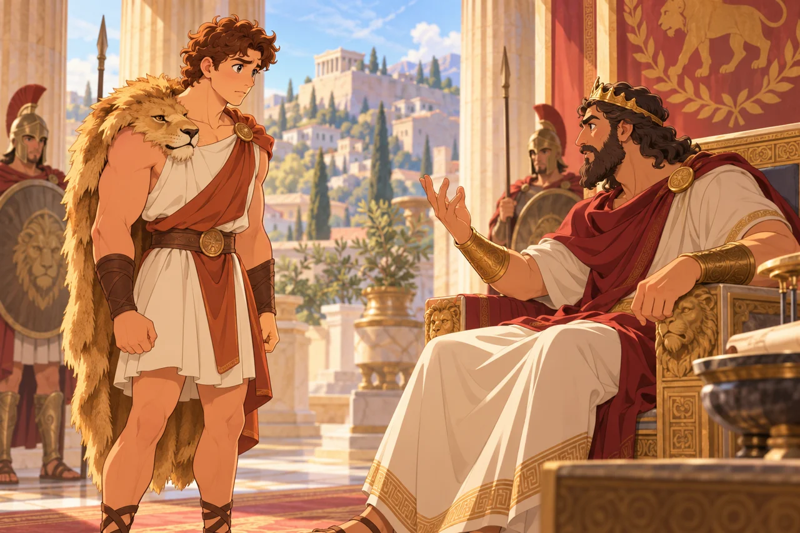
The Nemean lion
His first task was to stop a big lion.
This was no normal lion. It lived near a place called Nemea. It had big teeth, sharp claws, and skin that was hard as rock!
ROAR!
Hercules shot an arrow at the lion.
PING!
The arrow fell to the ground.
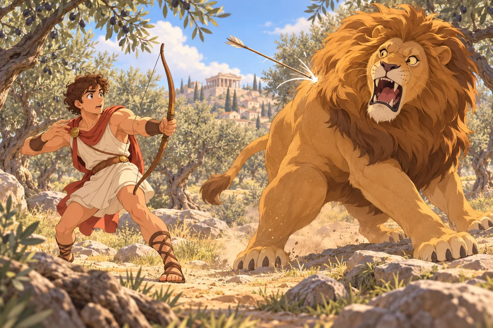
He shot one more.
PING!
It fell, too.
"Oh, no!" said Hercules. "My plan did not work!"
He stopped to think.
Then he had a new idea.
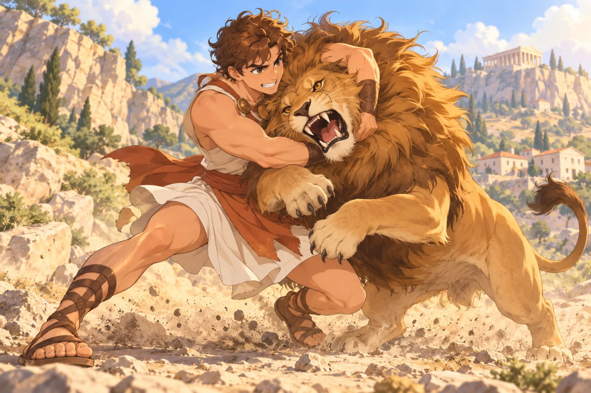
"I will use my strong arms!"
He ran to the lion and held it tight. The lion fought and fought. But Hercules did not let go.
At last, he won!
"Yes!" cried Hercules. "I did it!"
He took the lion's skin and wore it like a coat. The lion's head sat on his head like a big hat.
Now everyone knew who he was.
"Look! It is Hercules!"
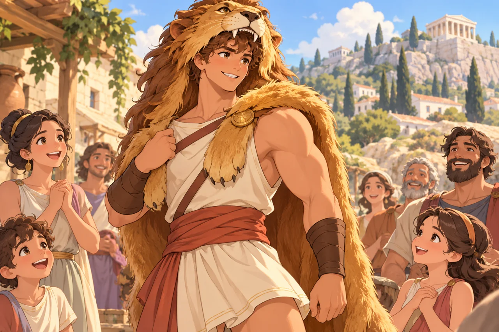
The many-headed Hydra
But Hercules had no time to rest.
His next task was even harder.
He had to stop a monster called Hydra.
Hydra had many heads!
Hercules cut off one head.
POP!
Two new heads grew back!
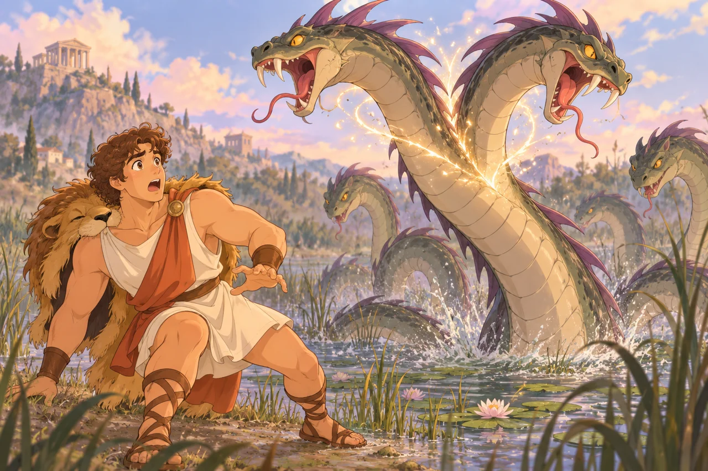
"What?" cried Hercules.
He tried again.
POP! POP!
More heads!
"Oh, come on!" he said. "This is not fair!"
Then his nephew Iolaus came to help.
"Wait!" said Iolaus. "I have an idea!"
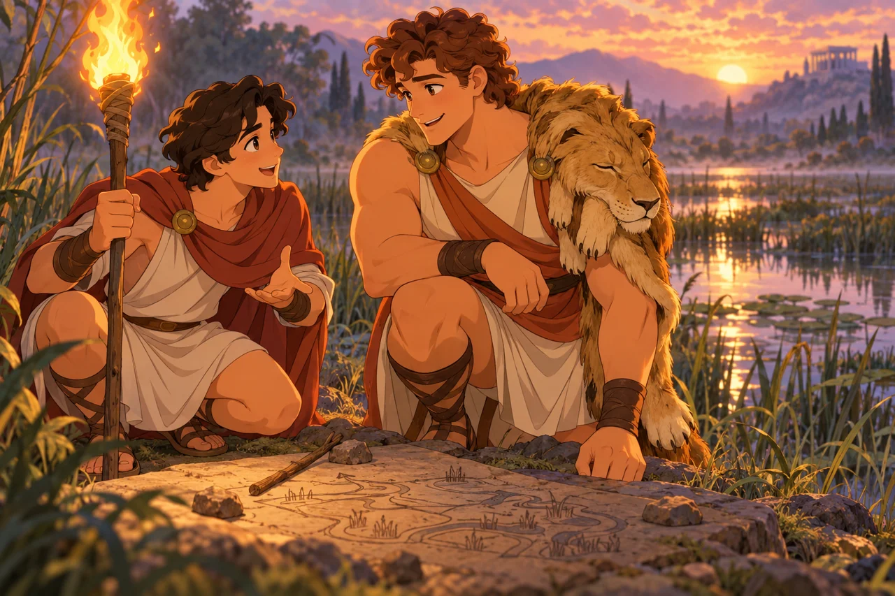
Hercules cut off a head. Iolaus used fire to stop new heads from growing.
They worked together.
At last, Hydra was gone.
"We did it!" cried Hercules.
"Yes, WE did it!" said Iolaus.
Hercules laughed.
"Even a strong hero needs a friend!"
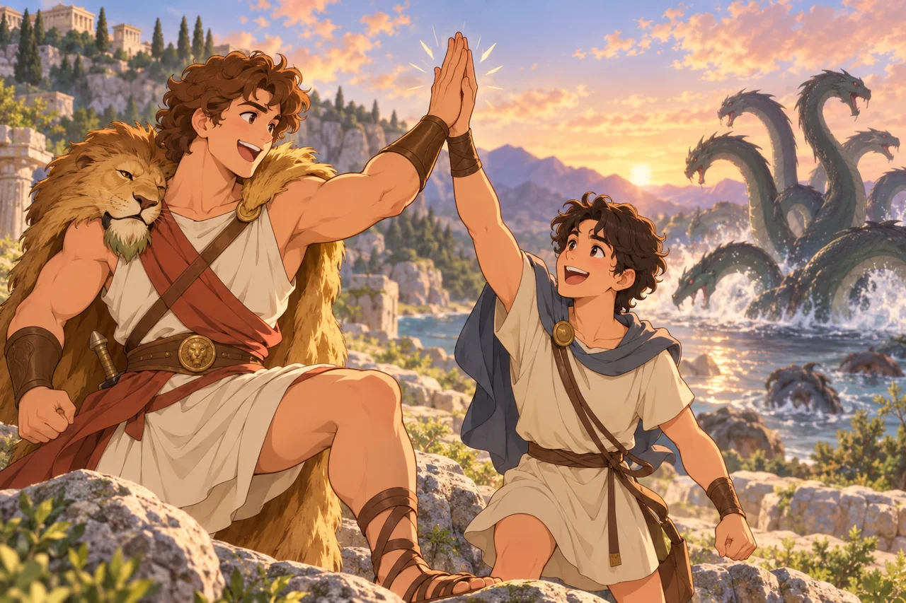
A river of ideas
The days went by. Hercules had more hard tasks to do.
One day, he had to clean a huge barn.
It was full of cows.
It was full of dirt.
And it was full of cow poop!
"YUCK!" cried Hercules. "It smells so bad!"
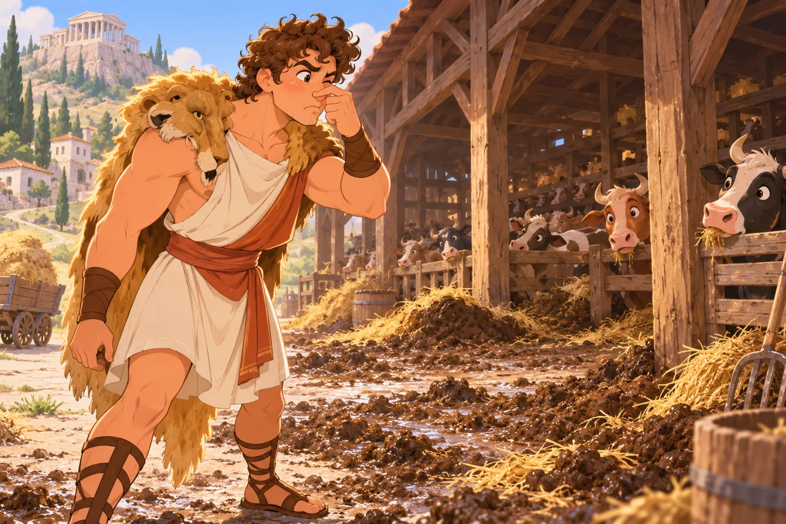
The barn had not been cleaned for years.
"How can I clean all this in one day?"
He looked at the barn.
He looked at the dirt.
Then he saw a river.
"Hey! I have an idea!"
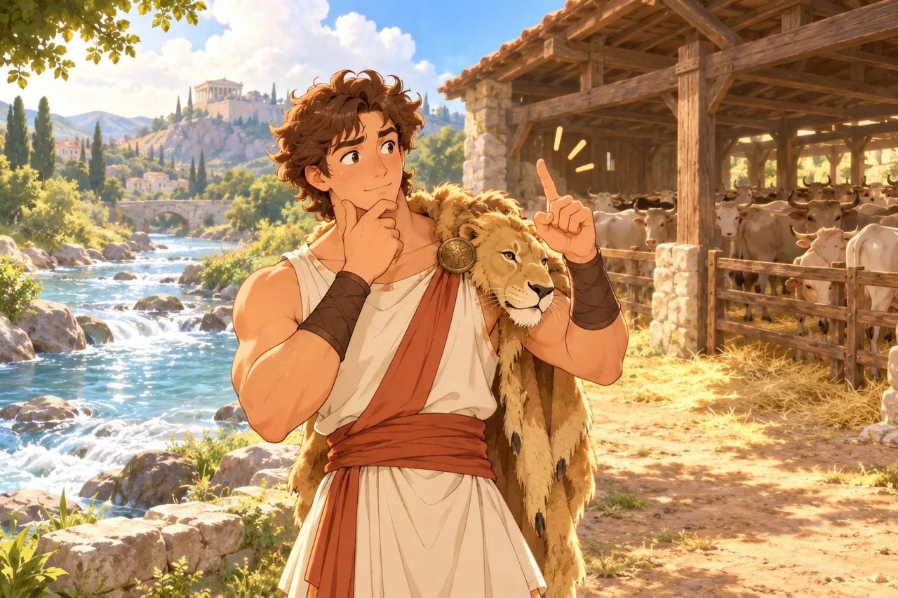
Hercules made a new path for the water.
WHOOSH!
The river ran through the barn.
The water washed the dirt away.
"All clean!" cried Hercules.
He smiled.
"I did not need big arms for that. I needed a good idea!"
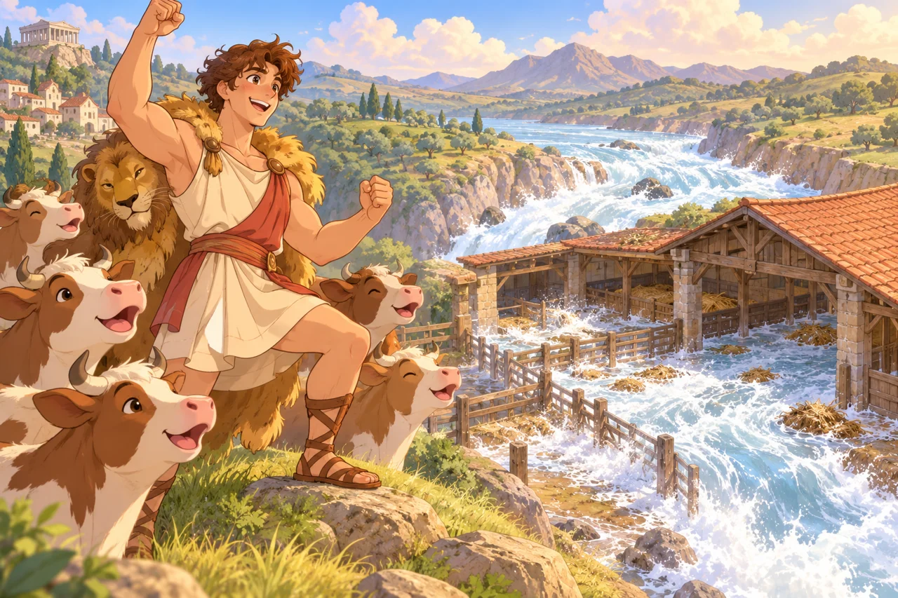
The three-headed dog
Hercules went on to do many more tasks. He ran after fast animals and met wild beasts.
But one day, he got a very strange job.
He had to bring back a dog.
"A dog?" asked Hercules. "That sounds easy!"
But this was no normal dog.
It had THREE heads!
Its name was Cerberus.
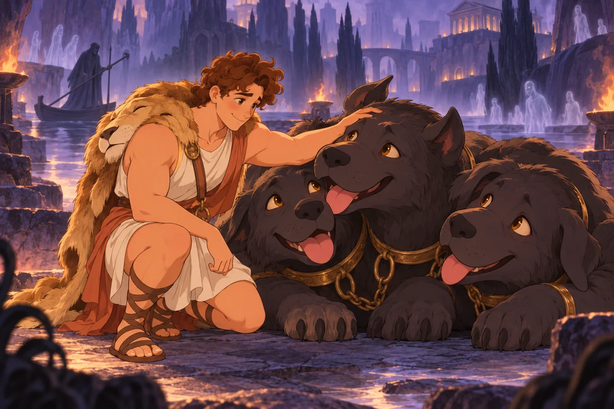
It lived deep under the ground in the land of the dead.
One head went WOOF!
One head went GRRR!
One head went ARF!
"Three heads?" said Hercules. "That is a lot of barking!"
Hercules went down to find the dog.
He was told he could take it, but he could not use a weapon.
"Okay," he said. "I can do that."
He held the big dog with his strong arms.
The dog was wild, but Hercules held on.
At last, he brought it up to the world above.
"Here is your dog!" he told the king.
The king was very scared!
"Take it away!" he cried.
So Hercules took Cerberus back to its home.
"Goodbye, big dog!" he said.
The golden apples
Hercules still had more work to do.
One day, he had to find three golden apples.
Not red apples.
Not green apples.
GOLDEN apples!
They grew in a garden far, far away.
Hercules walked for a long time.
At last, he met a giant named Atlas.
Atlas had a very strange job.
He held up the sky!
"Hello!" said Hercules. "Can you help me get the golden apples?"
"Yes," said Atlas. "But you must hold the sky while I go."
Hercules looked up.
The sky was HUGE!
"Well," he said, "I can try!"
So Hercules held up the sky.
It was heavy.
VERY heavy.
"Oh, boy!" he said. "This is hard!"
Atlas went to get the apples.
Soon, he came back with three golden apples.
But Atlas did not want to hold the sky again.
Hercules had to think fast.
"Can you hold it for just a little bit?" he asked. "I need to fix my coat."
Atlas took the sky back.
And Hercules picked up the apples.
"Thank you!" he said.
Then off he went!
Stronger with every step
At last, Hercules finished all twelve tasks.
He had done things no one thought he could do.
He had met a lion, a monster, and a dog with three heads.
He had cleaned a huge barn and found golden apples.
He had been scared.
He had been tired.
He had made mistakes.
But he had learned a lot.
He learned that big arms could not fix every problem.
Sometimes he needed a good plan.
Sometimes he needed a friend.
And sometimes he just needed to try again.
A home among the gods
Many years went by.
Hercules had more adventures. Some were happy, and some were sad.
At the end of his life on Earth, Hercules became a god.
He went high up to Mount Olympus, where the gods lived.
His dad, Zeus, was there.
"You have come a long way," said Zeus.
Hercules looked back at all he had done.
He thought of the lion.
He thought of Hydra.
He thought of his friends.
Then he smiled.
"I was strong," he said. "But I did not do it all alone."
And from that day on, Hercules lived with the gods.
People told his stories for years and years.
And they still tell them today.
The hero in you
But do you know what made Hercules a hero?
Was it his big arms?
Was it his lion hat?
Was it the big monsters he beat?
No. Those were only part of his story.
Hercules had to learn to think, to ask for help, and to keep trying.
And you can do those things, too!
Maybe you cannot lift a big rock.
Maybe you cannot fight a lion.
But you can help a friend.
You can clean up your toys.
You can try again when your blocks fall down.
And when something is too hard, you can say, "Can you help me, please?"
Being strong is not just about your arms.
Being strong is also about your heart.
So the next time you have a hard day, think of Hercules.
Stop.
Think.
Ask for help.
And try again.
Because you do not need to be a god to be a hero.
You can be a hero, too!
The End.